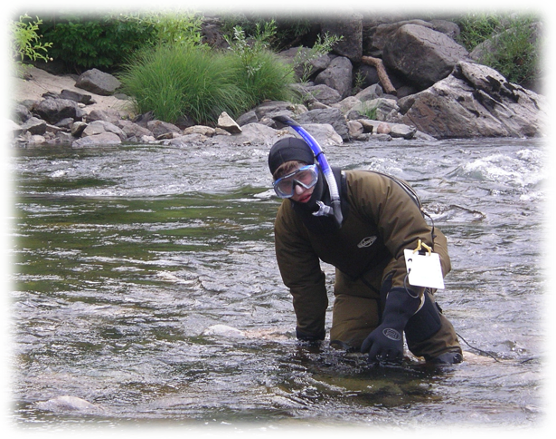
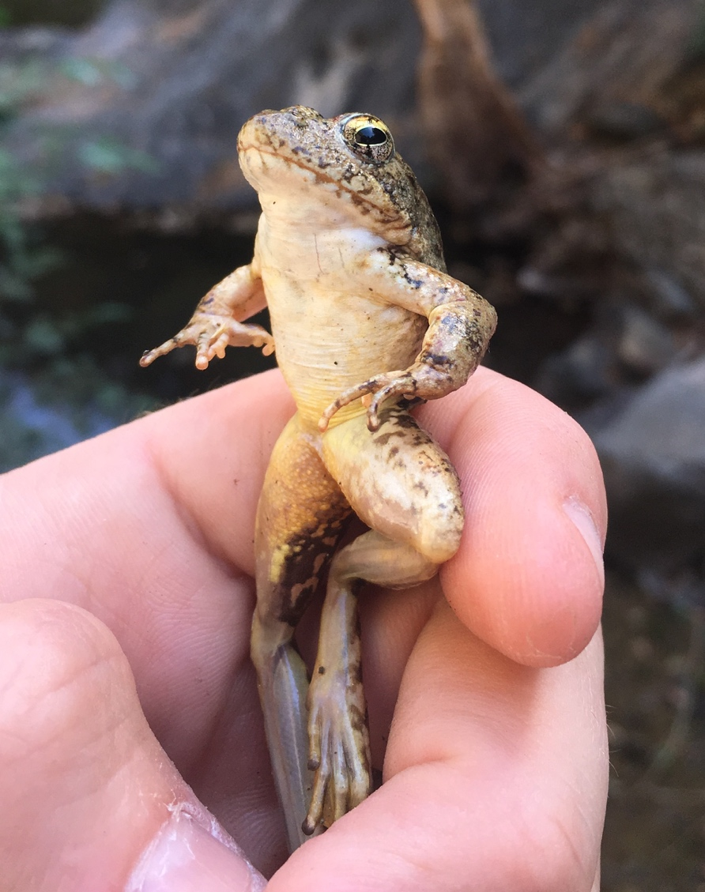

Getting Started with
R in Environmental Science
CABW 2025
Ryan Peek
Elena Suglia
Workshop Intro
Logistics
🛜 WiFi credentials:
Network:
Fill HerePassword:
unknownImportant locations:
- Bathrooms: fill in
Code of Conduct
Everyone who comes to learn should feel welcome here. We are committed to providing a professional, friendly and safe environment for all participants regardless of gender, sexual orientation, disability, race, ethnicity, religion, national origin or other protected class.
Please see a full code of conduct here:
https://d-rug.github.io/code-of-conduct.html
Meet the Team!

Ryan Peek
Senior Env. Scientist @ CDFW

Elena Suglia
Environmental Scientist @ California State Water Resources Control Board
Meet your Neighbors!

Please share with the person next to / nearby you…
- Your name
- Your professional affiliation and/or where you’re from
- What you hope to get out of this workshop
03:00
Workshop materials
One link for all materials
… and they’re all made with?
Quarto!
Agenda
| Time | Activity |
|---|---|
| 1:00 - 1:50 | Workshop Introduction Data Wrangling & Project Workflow |
| ~1:50 - 2:00 | Take a break ☕ |
| 2:00 - 2:50 | Adventures with Bioassessment Data (Exploratory analysis) |
| ~2:50 - 3:00 | Brain break 🧠 |
| 3:00 - 3:50 | Make a Map! 🗺️ |
| ~3:50 - 4:00 | Coffee break ☕ |
| 4:00 - 4:30 | Tying it Together 🪢 |
The Sticky Situation
“I’m lost / need help”
“I’m done and ready to move along”
👨💻 Put your sticky note on the back of your laptop screen 👩💻
Meeting you where you are
I’ll assume you
have limited or no R knowlege
have worked in Microsoft/Google Spreadsheets
have written a report on something
want to learn!
I’ll teach you
basics of a using R
how to get unstuck
a framework of tools you can reuse!
Workshop approach
We will use real bioassessment data to demonstrate some general data approaches to using open and reproducible workflows in R to summarizing and plotting data!.
Conventions
| 🧰 | Add this to your toolbox. |
| 📣 | Important announcement typically learned via trial and error…let us save you the pain |
| Detour warning. There’s a lot more to talk about here but, but there’s not time today. |
Asking Questions
You are always welcome to raise your hand! 🙋
Also feel free to ask in our shared doc!
Getting help (R Functions)
Functions are the 🍞 and 🧈 of R programming!
Let’s get muddy!
Click to go back to Home Site